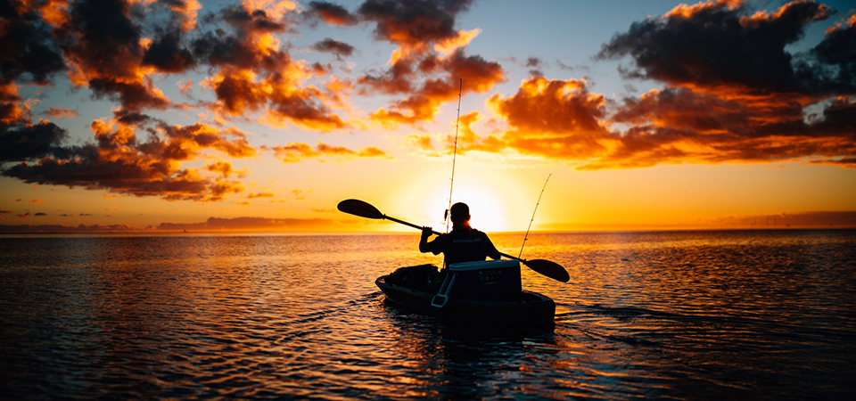
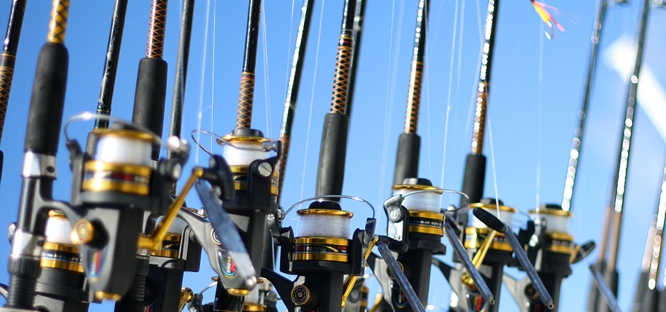

Спінінг (англ. spinning, від spin – «обертатися») – спортивна снасть для лову риби на штучну або натуральну приманку. Вудлище закидає приманку – блешню, воблер тощо – на велику відстань і витягує її за допомогою котушки.
Болонське вудилище – універсальний варіант для риболовлі у водоймах зі слабкою та середньою течією. У болонського вудилища замість кріплення до вершини є пропускні та додаткові рухомі кільця під волосінь та котушка, які збільшує керованість снасті та дальність закидання.
Джигове вудилище – застосовується для лову на джиг (приманку). Довге, щоб закидати в умовах обмеженого простору, чутливе, міцне та легке, досить жорстке та потужне, щоб чітко відчувати клювання та контролювати проводку.
Джеркове вудилище потрібне для риболовлі в техніці джеркінг. Джерки – це штучні приманки, схожі на великі воблери без лопатей. За допомогою ваги джерка можна зловити велику хижу рибу, яка живе на глибині. Для джеркінгу використовують міцні потужні вудки не довше як 2 м, з мультиплікаторною котушкою.
Зимове вудилище за специфікою сезонної риболовлі оснащене чутливими гнучкими наконечниками «кивок» або «сторожок».
Карпове вудилище потужне, підійде для лову коропів вагою десятки кілограмів. Розраховано на закидання важкої оснастки на максимальні відстані. Його довжина від 3,5-4,5 м, а відстань між ручками дещо більша за звичайну, що обумовлено специфікою закидання.
Кастингове вудилище використовується з мультиплікаторною котушкою. У таких моделей спеціальний курок (тригер) на катушкотримачі та багато кілець невеликого діаметра у верхній частині бланка.
Човнове вудилище – снасть для лову риби з борту човна. Це легкі невеликі моделі зі спеціальною подовженою ручкою, яку можна для зручності прикріпити до борту човна.
Матчеве вудилище складається з трьох колін загальною висотою 3,5-5 м, у нього 10-20 дрібних пропускних кілець на високій ніжці.
Махове вудилище закидається за допомогою помаху, застосовується для лову з поплавком і глухим оснащенням у водоймах без течії або зі слабкою течією. Особливість конструкції – відсутність пропускних кілець. Довжина закидання 5-12 м.
Нахлистове вудилище використовується для нахлистового рибного лову (включно з хижими рибами). Порівняно легке, котушка розміщується за тримачем, практично біля кінця вудилища. Таким вудилищем можна зробити точне закидання приманки та ловити рибу в місцях, де не впораються інші моделі – у струмках зі швидкою течією, у невеликих річках.
Пікерне вудилище – модель зі змішаним з'єднанням та змінними наконечниками, що зберігаються в тримачі. Завдяки їм під час донного лову можна застосовувати не тільки грузила, а й невеликі годівниці.
Вудилище поплавця – оптимальний варіант для рибалок-початківців і риболовлі в стандартних умовах. У таких моделей немає котушок, а волосінь кріпиться на вершину вудилища. Модель чутлива, але має маленьку дальність закидання.
Серфові та морські вудилища призначені для морської риболовлі та лову риби в смузі прибою. Це потужні та надійні моделі з якісною фурнітурою, досить довгі, нерідко складаються з 3-х колін, за допомогою яких можна ловити навіть проти сильного вітру.
Сомове вудилище – унікальний формат, адже вивудити рибу вагою до 100 кг дуже нелегко. Для таких завдань вибирайте міцну, довгу, важку модель (H HARD), з потужною котушкою, в яку поміститься більш як 150 м шнура, і міцним фрикціоном.
Сподове вудилище призначене для закидання важких ракет для підгодовування. Це дуже потужні моделі, адже наповнена спід-міксом ракета може важити 300-400 г. Як правило, на їхньому бланку є спеціальне маркування SPOD.
Тролінгове вудилище знадобиться для лову великої риби з рухомого моторизованого човна. Такі моделі чутливі, легкі, але потужні та міцні, щоб витримати атаку великого хижака та підтягнути його до човна.
Фідерне вудилище підходить для закидання приманки на далекі відстані та риболовлі при сильній течії, використовується для лову з дна водойми. У такого вудилища є годівниця (фідер), яка опускається на дно, і індикатор клювання – квівертип. За допомогою вудилища фідера можна підгодовувати та ловити рибу з одного місця, в течії та стоячій воді.
Сучасні вудилища та спінінги виготовляються з різних матеріалів.
Вудилища та спінінги з вуглепластику – найбільша категорія. Вони легкі, міцні, з відпрацьованою технологією виготовлення, а поведінка матеріалу та його можливості – передбачувані.
Вудилища зі склопластику важчі та м'якші, ніж вуглепластикові. Гнучкі та легкі, вони можуть бути порожніми та монолітними.
Композит – вдала суміш вуглепластику та скловолокна. Композитні вудки збалансовані, міцні, помірно жорсткі та тендітні, з високою дальністю закидання, невибагливі у користуванні.
Від якості матеріалу залежить строй вудилища – його вигин під час закидання. Строй визначає, як поведеться вудилище під навантаженням, і з якою швидкістю повернеться в спокійний стан.
Повільний строй найчастіше буває у вудилищ із низькомодульного вуглепластику. Такі моделі гнуться по всій довжині.
Спінінги з високомодульного вуглепластику – зі швидким строєм. Під навантаженням вудилище згинається майже біля самого кінчика, а потім дуже швидко повертається до спокійного стану.
При середньому та середньошвидкому строї гнеться верхня половина спінінга.
При надшвидкому – максимальний вигин вудилища йде на верхню чверть хлиста.
При прогресивному або комбінованому строї спінінг при невеликих навантаженнях поводиться як швидкий, а при великих – як повільний. Це підвищує потенціал вудилища, такі моделі можна назвати універсальними.
З урахуванням строю у спінінгів є маркування:
- повільний – Slow (S);
- середньоповільний – Regular-Slow (RS) або Medium-Slow (MS);
- середній – Regular (R) або Medium (M);
- середньошвидкий – Regular-Fast (RF) або Medium-Fast (MF);
- швидкий – Fast (F);
- дуже швидкий – Extra-Fast (EF).
Корисна порада: вибирайте строй вудилища з урахуванням способу лову. Також враховуйте закономірність: чим швидше строй вудилища, тим менша дальність закидання та вище чутливість, і навпаки.
Важливо, щоб приманка підходила до вудилища за вагою.
Занадто легку приманку рибалка не відчує, а вудилище в такому разі стане простим ціпком.
Занадто важка приманка дасть серйозне навантаження на вершину спінінга, через що вона може поламатися.
Найкраще при підборі приманок орієнтуватися на дані тесту вудилища. Це значення зазвичай вказується на бланку поруч із тримачем.
Тест вказують у вигляді двох величин через тире:
- перша – мінімальна вага, яку можна ефективно закинути;
- друга – максимальна вага приманки.
Важливий аспект: максимальні показники тесту часто завищені, тому не варто навантажувати вудилище до граничних значень. Якщо у спінінга зазначена максимальна величина 60 г, насправді краще не перевищувати 50 г.
Фурнітура – всі компоненти вудилища, крім самого бланка (стрижня), на якому вона встановлена.
Кільця та технологія їх розміщення. Для моделей серійного виробництва зразок якості – кільця та фурнітура від компанії Fuji.
Ці кільця легкі, із карбідокремнієвими або алконітовими вставками, довговічні, з малою абразивністю.
На моделях з кільцями Fuji кріпиться відповідна бирка, але їх можна відрізнити й візуально завдяки кремнієвій вставці чорного кольору.
Елітні моделі спінінгів часто комплектуються титановими кільцями, що також підтверджується биркою.
Приклад бирки. У спінінга з такою биркою титанові кільця, встановлені за новою концепцією
Розміщення кілець. Розміщення буває двох типів: звичайне та за новою концепцією (new concept).
Основні переваги розміщення кілець за новою концепцією: знижується загальна вага моделі, можна далі закинути приманку на довгих вудилищах.
Матеріал рукояті. Ручка вудилища має бути зручною, легкою та міцною.
Більшість тримачів виготовляються з пробки або повністю синтетичного матеріалу EVA, схожого на губку.
Пробка – натуральний матеріал, він легкий, теплий, пружний, не ковзає в руках, приємний на дотик.
Головний недолік ручки з пробки – вона швидко забруднюється і її потрібно регулярно чистити.
У спіненого ЕВА пориста структура, такі вудилища легкі, пружні, цільні. Основна перевага EVA перед пробкою – практичність, такий тримач менше забруднюється та легше миється.
Також тримачі бувають комбінованими, а в елітних японських моделей спінінгів виконані з дерева, у тому числі й червоного.
Котушкотримач. Котушкотримач буває двох типів: під звичайну безінерційну котушку та під мультиплікаторну «бочку».
Спінінги з котушкотримачем під мультиплікаторну котушку – кастингові. На відміну від звичайних вони мають тригер («ріг», «курок») на катушкотримачі.
Розміщення кілець на кастингових вудилищах відрізняється від розміщення на звичайних спінінгах. Тому використовувати безінерційну котушку на кастинговому вудилищі та навпаки – не вдасться.
Не буває універсальних вудилищ на всі випадки життя, та це й не потрібно.
Щоб вибрати модель для класичної риболовлі важливо визначитися з декількома параметрами.
Водойма. Для риболовлі в неглибокому озері або річці з нешвидкою течією вибирайте лайтові та медіум-лайтові моделі з максимальною вагою приманки до 15 г.
На річку з середньою течією або на глибоких водоймах без течії краще взяти вудилище медіум-класу з максимальною вагою приманки близько 25 г.
З сильною течією впорається спінінг важкого класу з максимальною вагою приманки не менш як 40 г.
Довжина вудилища. Довжина вудилища – відстань від товстого краю до тонкого кінчика, за який кріпиться волосінь. Цей параметр залежить від типу вудилища, його конструкції, умов лову та коливається від 1 до 9 метрів.
Рибалите на човні? Ідеальна довжина човнового спінінга 2,1 м, тому зверніть увагу на моделі завдовжки 2-2,4 м.
Без човна вибір довжини спінінга визначається зростом рибалки та береговою лінією водойми.
Якщо берег щільно заріс деревами та чагарником, немає сенсу купувати довгий спінінг. З ним складніше переміщатися від однієї точки водойми до іншої – є ризик зламати кінчик спінінга. Довжина ускладнить і закидання: приманка чіплятиметься за гілки і може обірватися.
На великі водоймища незалежно від вашого зросту краще брати «береговики» –моделі довжиною від 2,7 м2.
Тут працює принцип «чим довше, тим краще», оскільки дальність закидання приманки залежить від довжини спінінга.
Чим довше вудилище, тим далі закидання, але довгою снастю незручно користуватися в обмеженому просторі. Чим коротше вудилище у складеному стані, тим простіше його перевозити чи переносити.
Строй. Вибір строю вудилища визначається способом лову. Також враховуйте закономірність: чим швидший строй вудилища, тим менша дальність закидання та вище чутливість, і навпаки.
Вага. Тут правило просте: що менше, то краще.
Конструкція. Вудилища бувають цільні, штекерні та телескопічні. Цільні моделі не мають з'єднань, тому вони надійніші та чутливіші.
Мінус цільних вудилищ – транспортувальна довжина дорівнює реальній. Тому без жорсткого або напівжорсткого тубуса не обійтись.
Штекерні вудилища зручні та швидко збираються, але вони менш надійні та чутливі ніж цілісні.
Телескопічні вудилища відносяться до тревел-моделей. Такі моделі зручно перевозити, але вони програють у надійності та чутливості.
Після покупки вудки або спінінга обов'язково перевірте важливі параметри.
Правильність розміщення кілець. Вони мають бути в одну лінію, щоб жодне не виходило за її межі.
Якість вставки кілець. Вони мають бути гладкими, без видимих пошкоджень і тріщин, щільно триматися та не провертатися.
Цільність. Відсутність вм'ятин від ударів, цільність сполучних стиків, якість закріплення фурнітури на бланку.
Кріпильна система катушкотримача. Гайка має ходити плавно та не бовтатися на різьбленні. Якщо котушкотримач та гайка металеві, бажана наявність контргайки, щоб гайка самостійно не розкрутилася.